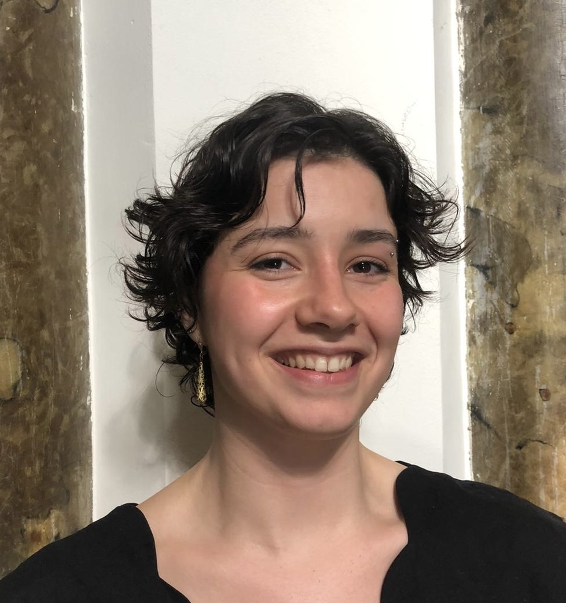

AI governance researcher & facilitator
I'm a Senior AI and Tech Researcher at the Ellen MacArthur Foundation, where I lead work on the organisation's AI transition and governance — from evaluating emerging regulation to building research tools that put AI to work responsibly in circular economy research.
Through Intersticia I design and facilitate AI ethics workshops that get people out from behind their screens and thinking critically about how these systems actually behave, including through Brave Conversations.
The flagship of that work is The Simulation Game an embodied workshop in which participants enact the support structure of a large language model: moving, speaking, and negotiating as the system they usually only type at. Designed to surface how AI reshapes group dynamics, it has been run with teams and audiences internationally and is openly published as a documented, citable research instrument on GitHub.
My background spans web development, research infrastructure, and an MSc in the Social Science of the Internet from the University of Oxford. I'm interested in AI governance and policy and responsible technology.